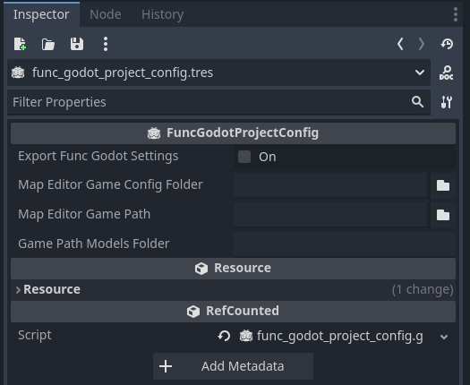

Configuring Your Project
FuncGodot Project Config
FuncGodot has the option of using a FuncGodotProjectConfig resource to create local project wide settings for your other FuncGodot resources. These settings are applied only to your machine, in order to better facilitate working with a team that may not have the same drive or directory setup or even the same map editor as you yourself use.
You won't create the FuncGodotProjectConfig resource for your project, as this resource doesn't actually save anything to itself directly. Instead you will use the pre-made func_godot_projet_config.tres resource found in the addons/func_godot/ folder.

Project Config Properties
Viewing this resource's properties in the inspector, you'll be greeted with some options. We'll ignore the Export Func Godot Settings property for now.

For the Map Editor Game Config Folder, you'll want to locate your map editor's game configuration or installation folder and then create a sub folder for your game's configuration. This might look something like C:/GameDev/TrenchBroom/Games/MyGame/ or C:/GameDev/J.A.C.K/MyGame/. This tells FuncGodot where the default location to save generated configuration and FGD files.
The Map Editor Game Path refers to what your Map Editor considers the location of your project. This might look something like C:/GameDev/MyGodotProject/ or C:/GameDev/MyGodotProject/trenchbroom/. The intended use for this is to streamline certain FGD resource paths, like the TrenchBroomFGDModelPointClass's model export location.
The Game Path Models Folder is the default folder path relative to your Map Editor Game Path that tells FuncGodot where to save generated model files to. For example, with a Map Editor Game Path value of C:/GameDev/MyGodotProject/trenchbroom/ and a Game Path Models Folder value of models, the generated model file will be saved to C:/GameDev/MyGodotProject/trenchbroom/models/. Currently only used by TrenchBroomFGDModelPointClass.
Exporting the Project Config
Remember that Export Func Godot Settings property I told you to ignore earlier? Once you have your settings in place, go ahead and click it. It will automatically generate a MyGameFuncGodotConfig.json file in your Godot project's user data folder.
This is how we keep local settings local. Upon opening your project, FuncGodot will automatically update func_godot_project_config.tres to load the data from the generated JSON file found in your user data folder, and setting the resource's Export property to true will overwrite that file with the new settings. These settings are not saved to source control, allowing teams to work together more easily and more flexibly.
Now that our map editor directories are set up, it's time to take our first look at FGD files >>>